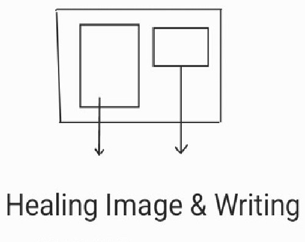
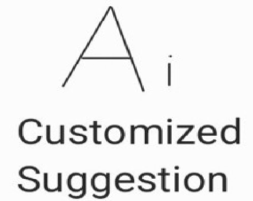

1. 자기소개

- 1. 소속: 한남대, 컴퓨터공학과
- 2. 이름: 이현재
2. 나의 스킬 5가지 (마우스를 원 위에 올리시면, 각각의 네온효과를 볼 수 있습니다.)
C Language
JavaScript
Git(예정)
Phyton(예정)
NodeJS(예정)
3. 프로젝트 수행 경험 5가지
- 버튼을 클릭하시면 프로젝트에 대한 세부내용 및 계획을 보실 수 있습니다.
- 닫기 버튼으로 세부내용을 숨김처리 할 수 있습니다.
(1) 텍스트 게임 프로젝트 수행 (부산헹(1), 부산헹(2), 한남대학교 컴퓨터공학과 장준혁 교수님 프로그래밍 실습 수업 과제)

(2) 힐링 글, 이미지 제공하는 웹페이지 디자인 작성 프로젝트(예정)

(3) 서버, 데이터베이스 프로젝트(예정)
(4) 보안 및 광고 수익창출 기능 프로젝트(예정)

(5) AI 프로젝트(예정)

4. 나의 장래희망 직무 5가지
- 0, 1, 2, 3, 4 중 원하시는 번호를 입력해주시면 됩니다.
- 직업에 따라 표의 경계선 색깔이 변경되어, 어떤 직무를 선택했는지 확인 할 수 있습니다.
| 인덱스 | 직무 |
|---|---|
| 0 | 웹 서버 개발자 |
| 1 | 앱 서버 개발자 |
| 2 | 게임 서버 개발자 |
| 3 | 인공지능 개발자 |
| 4 | 보안 개발자 |